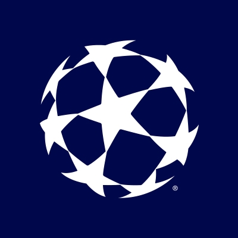

Historial de todos los equipos que han ganado la UCL

Equipos con mas títulos de UCL
- Real Madrid F.C (14) - España
- A.C Milan (7) - Italia
- F.C Bayern Múnich (6) - Alemania
- Liverpool F.C (6) - Inglaterra
- F.C Barcelona (5) - España
- A.F.C Ajax (4) - Holanda
- F.C Inter de Milán (3) - Italia
- Manchester United (3) - Inglaterra
- Jueventus F.C (2) - Italia
- S.L Bnefica (2) - Portugal